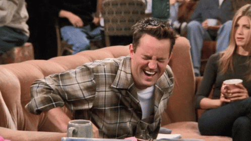

Com a ideia de deixar sua comunidade mais divertida, amigável, engraçada e, é claro, sarcástica, criamos o Chandler_bot. O "Chandler_bot" foi feito com o intuito de tentar transportar o humor sarcástico do Chandler Bing, personagem da série Friends dos anos 90, para os usuários do discord nos dias de hoje.

Ele funciona da seguinte forma: A cada comentário feito por qualquer usuário, o Chandler_bot envia uma de suas várias mensagens sarcásticas, todas elas criadas com a mesma ideia, de fazer os melhores comentários sarcásticos que já existiram.